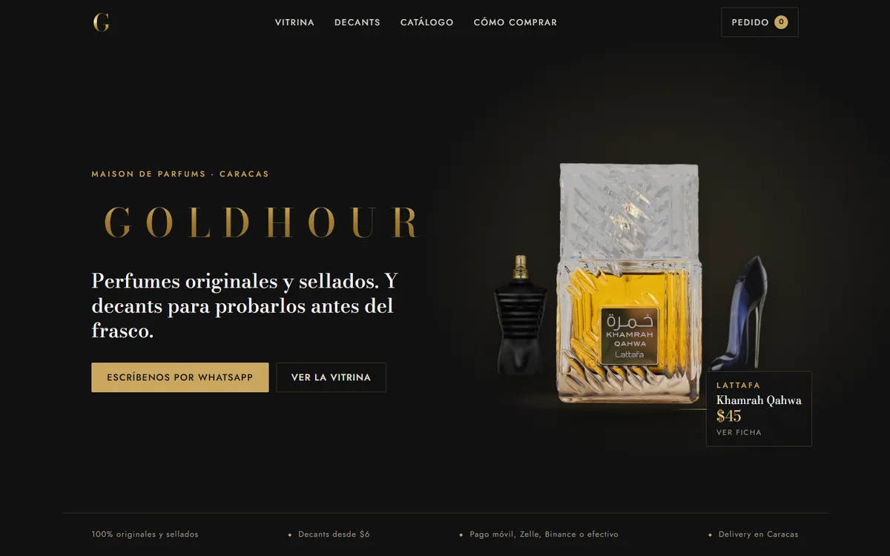
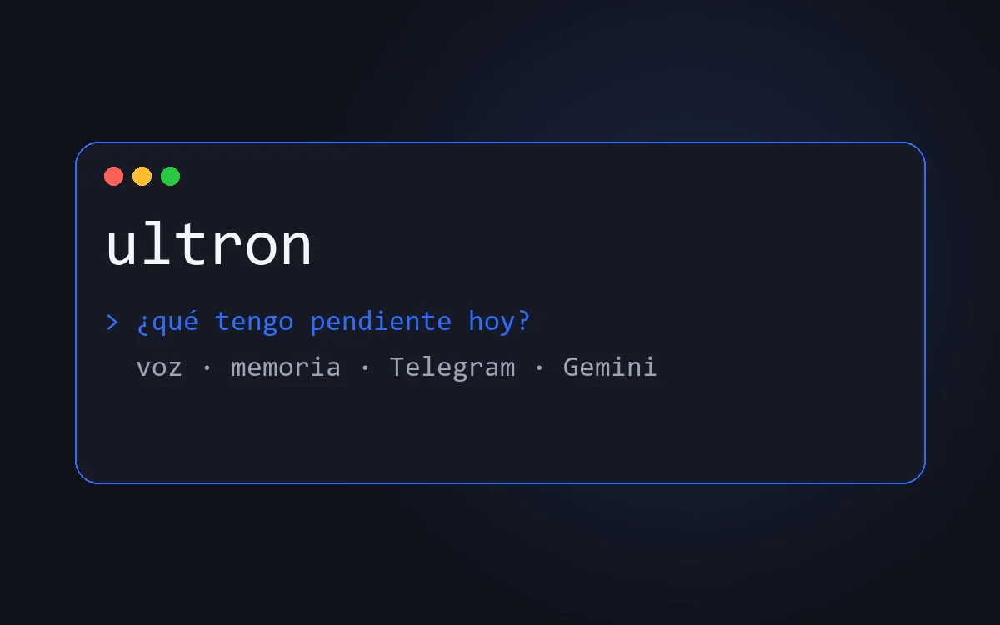

Tienda online · Astro y Supabase
Goldhour
Perfumería en Caracas: catálogo de más de 300 perfumes, recomendador y pedidos por WhatsApp.
Ver la web →Hola, soy Josías
Especialista en páginas web
Páginas web, bots con IA y soporte técnico remoto para negocios en Caracas y donde estés.
Hablemos
Tienda online · Astro y Supabase
Perfumería en Caracas: catálogo de más de 300 perfumes, recomendador y pedidos por WhatsApp.
Ver la web →
Restaurante · 3D con Three.js
Parrilla a las brasas: un carbón en 3D que prende llamas, menú con fichas y reservas por WhatsApp.
Ver la web →
Asistente con IA · Python
Mi asistente personal para Windows: voz, memoria propia y bot de Telegram sobre Gemini.
Ver el código →También hice un bot de Telegram que calcula el pedaleo con las tasas en vivo del BCV y Binance P2P. Ver el código →
Landings, catálogos y tiendas que se ven bien en el teléfono y llevan clientes a tu WhatsApp.
Paneles privados con login para editar tu catálogo, ver tus números y saber qué funciona.
Bots de Telegram o WhatsApp que responden, calculan y avisan por ti, también con IA.
Optimizo y reparo tu PC a distancia por AnyDesk: limpieza, velocidad, programas y fallas.